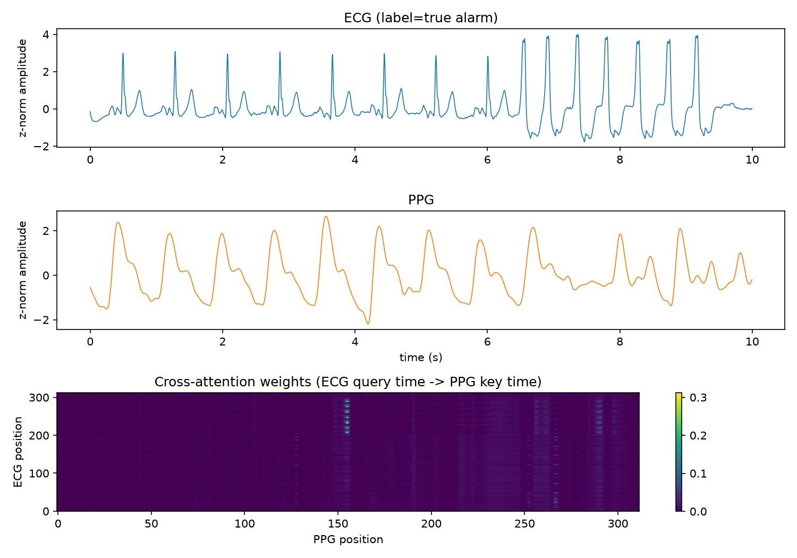
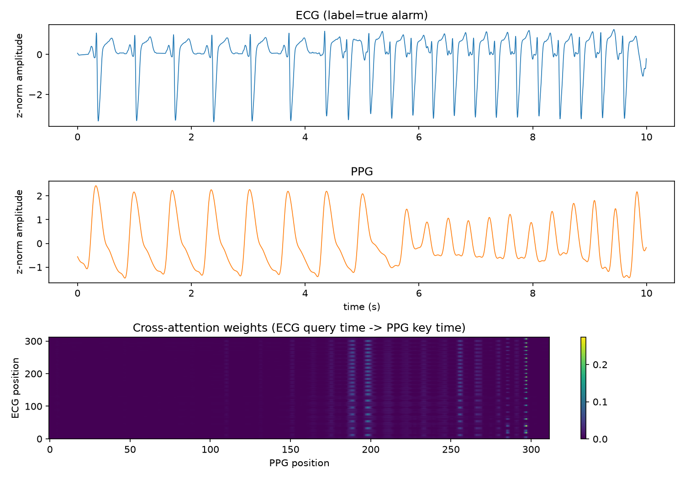

The originally proposed cross-attention fusion model is not better than concatenation, and it is beaten by classical-feature models, ResNet1D and ensembles. The earlier headline (F1 0.774) was optimistically biased because the best epoch was selected on the same fold that was reported.
Threshold fixed at 0.5. Protocol: docs/evaluation_protocol.md. Recommended model and limitations: docs/model_card.md. Not a medical device; research prototype.
All models share identical splits and seeds within a table. Click a metric column header or use the controls to sort and filter. Full tables with bootstrap confidence intervals: docs/LEADERBOARD.md.
| # | Model | Group | Accuracy | F1 | AUC | Sens | Spec | ΔF1 vs best [95% CI] |
|---|
src/safety.py) for a risk-controlled threshold with an explicit confidence bound.The first version selected the best epoch on the reported fold. After adding an inner validation split (and 10 seeds), the same four variants score as below (Challenge 2015, mean F1 and AUC over folds and seeds). Both columns come from runs/legacy_pre_fix/comparison_table.csv and runs/challenge2015_ppg/comparison_table.csv.
| Variant | F1 before | F1 after | Δ F1 | AUC before | AUC after | Δ AUC |
|---|
Ordering also changes: the old table showed cross-attention on top; the leak-free table shows it indistinguishable from concatenation (see key findings).
Illustrative only. These maps come from the original cross-attention model. Attention does not track measured pulse transit time (Spearman rho = -0.04, permutation p = 0.39), so they must not be read as evidence that the model verifies ECG-to-pulse timing.

v630s · Ventricular Tachycardia · true alarm
a163l · Asystole · false alarm

t235l · Tachycardia · true alarm